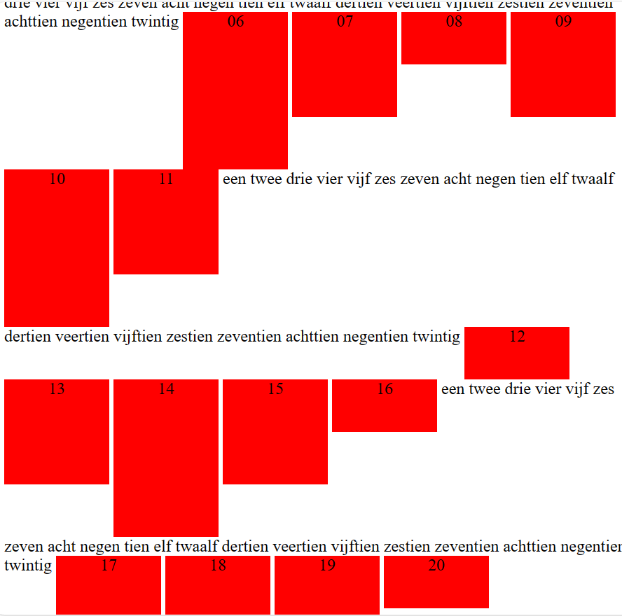
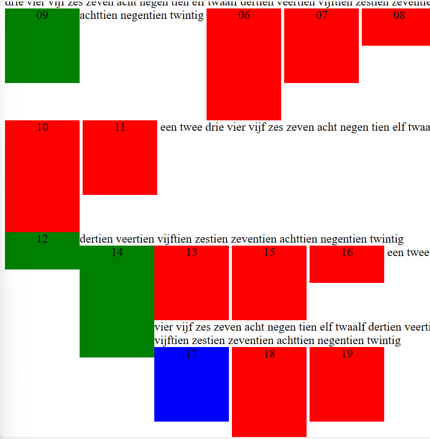

Opdracht 4:

- Elementen 09, 12 en 14 met de 'floaty' class zouden naar links worden verplaatst binnen hun regel.
- Er zou geen grote ruimte achterblijven tussen elementen 08 en 10 waar element 09 stond.
- Elementen 12 en 14 zouden niet altijd netjes naast elkaar staan, afhankelijk van of ze in dezelfde regel passen.
- Er zou geen kleine ruimte zijn tussen de groene floaty elementen en het rode element rechts ervan, maar wel tussen de rode elementen onderling.
- Het toevoegen van de 'break' class aan element 17 zou geen invloed hebben op de positionering, omdat clearing van floating elementen alleen relevant is bij display: block elementen, niet bij inline(-block) elementen.
